Pink has a reputation problem in interior design that it really doesn't deserve. Done with the right shade and the right restraint, it reads as warm, sophisticated, and genuinely charming, not childish, and nothing close to the color equivalent of a greeting card.
The trick is mostly in the shade and the balance. A dusty, muted pink paired with the right neutrals or a grounding color like sage green or deep wood tones can work in almost any room in the house, from a single accessory all the way up to a full accent wall.
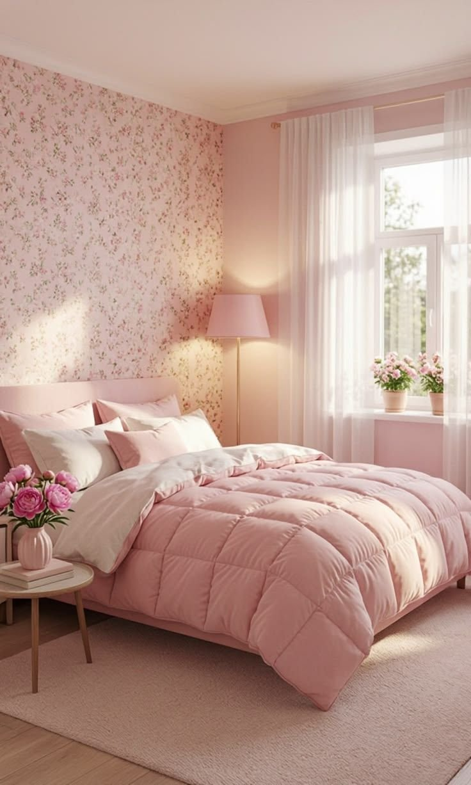
15 Pink Decor Ideas Worth Trying
Go Bold With Deep, Saturated Pink
Not every pink has to be soft. A deep, saturated pink, closer to raspberry or magenta, reads as confident and genuinely dramatic in the right room.
It works especially well in a smaller room or as a single statement wall, where the intensity has room to make an impact without overwhelming the whole home.
Paired with dark wood or black accents, deep pink reads as moody and sophisticated rather than anything close to childish.
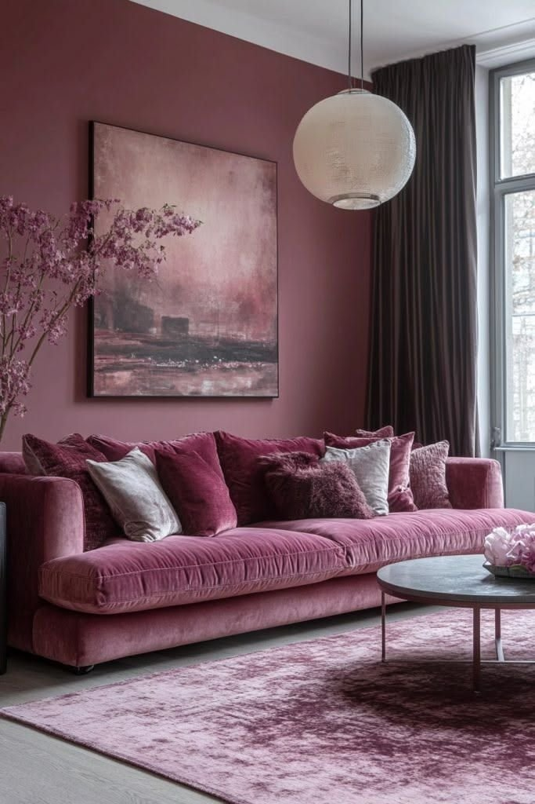
A Pink Reading Nook in an Awkward Corner
An unused corner is really the perfect spot to commit to pink fully, since it's contained and doesn't affect the rest of the room's palette.
A pink accent chair, a small side table, and good reading light turn a dead corner into one of the most-used spots in the whole house.
Because the space is small, even a bold, saturated pink feels manageable instead of overwhelming anyone who walks by.
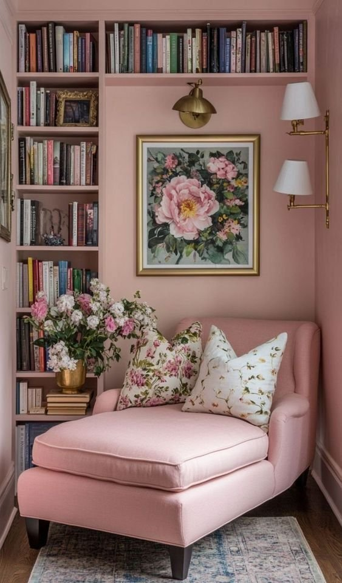
Pink Through Small Accessories
For the lowest-commitment option on this entire list, pink accessories do real work without touching a single wall or piece of furniture.
A vase, a stack of books, a throw pillow, or a small ceramic object all bring the color in without any risk of overcommitting to it.
It's the easiest way to test whether pink actually belongs in a space before moving on to anything more permanent.
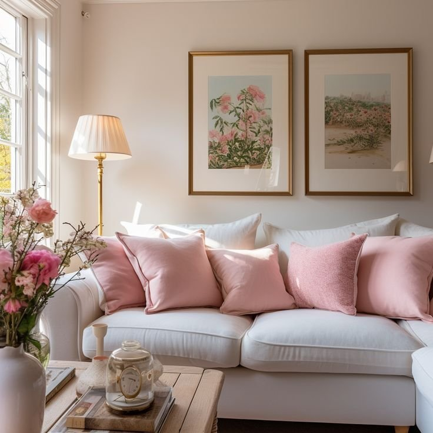
A Pink Rug Underfoot
A pink rug brings the color in at floor level, which is a much easier commitment to live with than pink walls or furniture.
A plush, textured pink rug under a chair or coffee table softens the whole space and ties a room's other pink accents together nicely.
It's an easy starting point for anyone testing out whether they actually want more pink in a room before committing further.
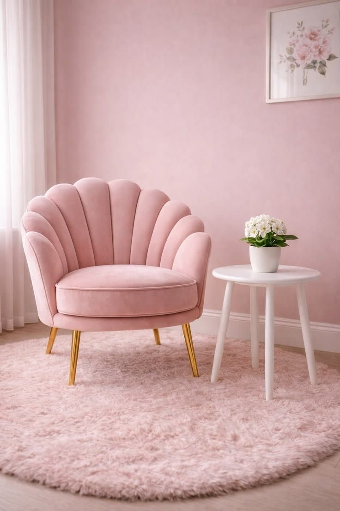
Warm Up Pink With Natural Wood
Pink on its own can occasionally read as cold or flat, and natural wood is really the fastest fix for that problem.
A wood coffee table, floating shelves, or a wood-framed mirror next to a pink sofa or wall adds warmth that pink alone doesn't provide on its own.
The combination of soft pink and warm wood tones is one of the easiest ways to keep a pink room from feeling like a single note.
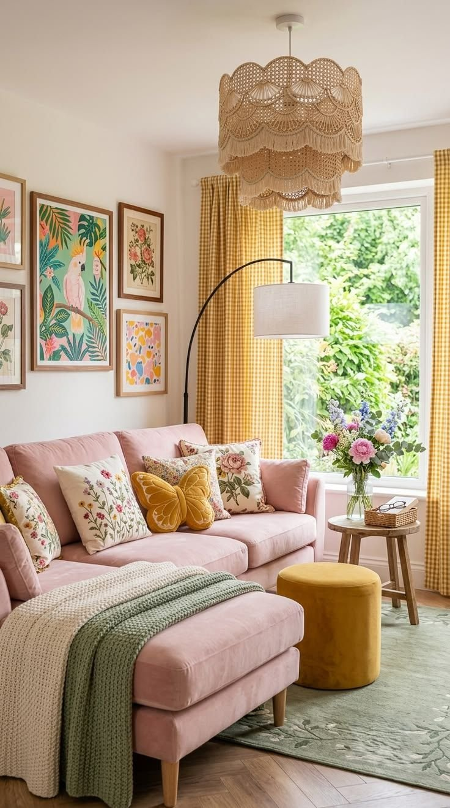
Pink Paired With Sage Green
Pink and sage green is one of the most reliable color pairings in interior design, soft but never flat, and surprisingly versatile across a range of styles.
The green grounds the pink, keeping the combination from reading as too sweet or too feminine for the room it's in.
It works in florals, textiles, or paint in equal measure, which makes it an easy pairing to bring in gradually rather than all at once.
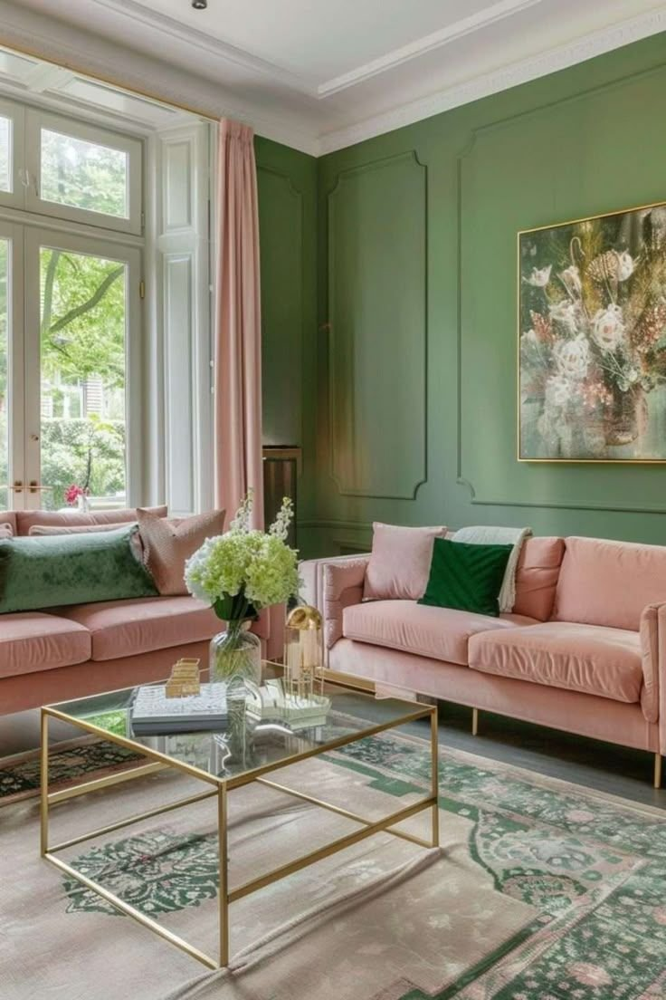
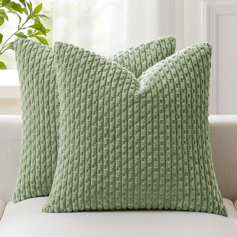
Kevin Textile Soft Corduroy Pillow Covers, 18 x 18 Inch, Sage Green, 2 Pack
Shop on AmazonPink Tile in the Bathroom
Pink tile in a bathroom has genuine staying power, especially in a dusty or muted shade rather than anything bubblegum-bright.
It pairs beautifully with brass or matte black fixtures, which keeps the overall look from reading as overly soft or saccharine.
A full pink tile wall or floor makes a strong, lasting statement in a room that's otherwise easy to leave entirely neutral.
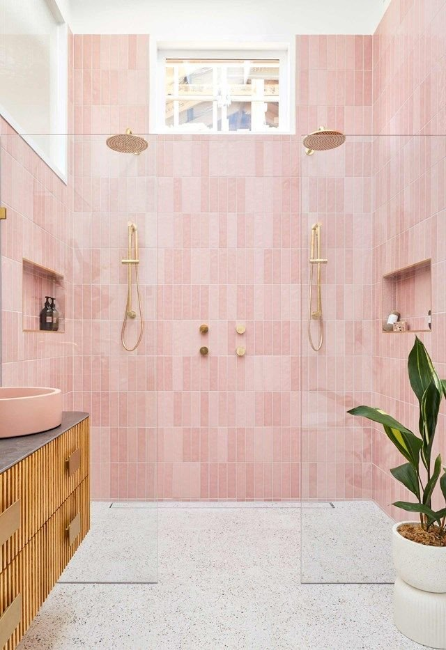
A Fully Pink Dining Room
The dining room is a lower-stakes place to commit to pink more fully, since it's a space people pass through rather than linger in all day.
Pink walls paired with a wood table and neutral chairs keep the room from feeling like a single giant color block.
It's a strong fit for anyone who wants to try a bolder pink moment without redoing an entire living room or bedroom first.
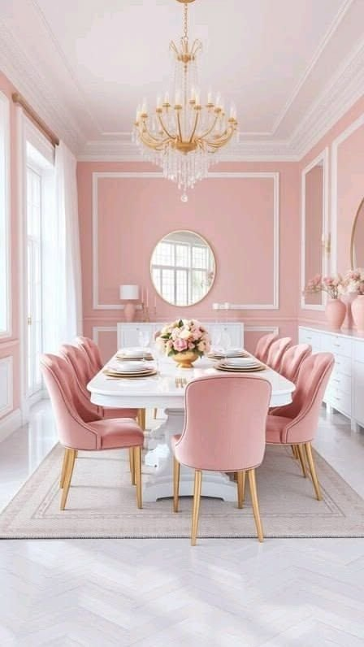
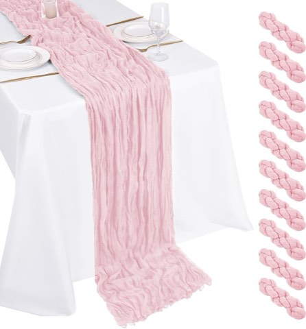
Light Pink Cheesecloth Table Runners, 17 x 108 Inch, Boho Gauze, 10 Pack
Shop on AmazonA Pink Kitchen Makeover
Pink in the kitchen sounds unexpected until it's actually seen in person, cabinetry or an island in a muted pink reads as genuinely elevated, not twee at all.
A dusty rose or terracotta-leaning pink paired with brass hardware and white countertops keeps the look sophisticated rather than themed.
It works especially well as an island color specifically, letting the surrounding cabinetry stay neutral while the island carries the personality.
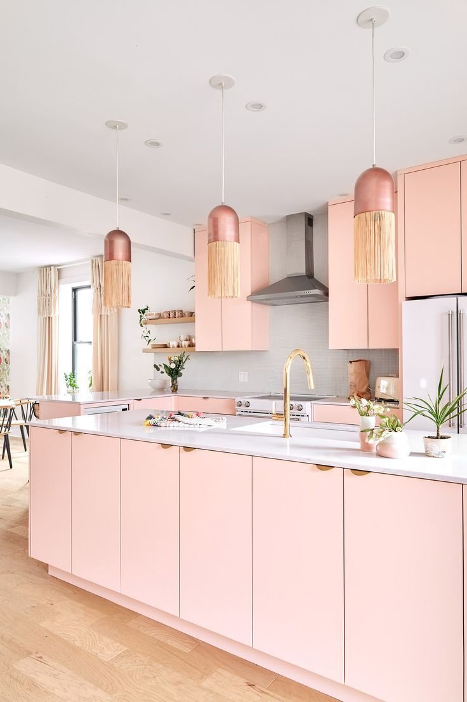
A Pink Headboard as the Focal Point
An upholstered pink headboard does a lot of work for a bedroom without needing the walls or bedding to match it at all.
A channel-tufted or scalloped shape in a soft pink velvet reads as a genuine design choice rather than an afterthought.
It gives the whole room a focal point immediately, which means everything else, nightstands, lighting, art, can stay simple around it.
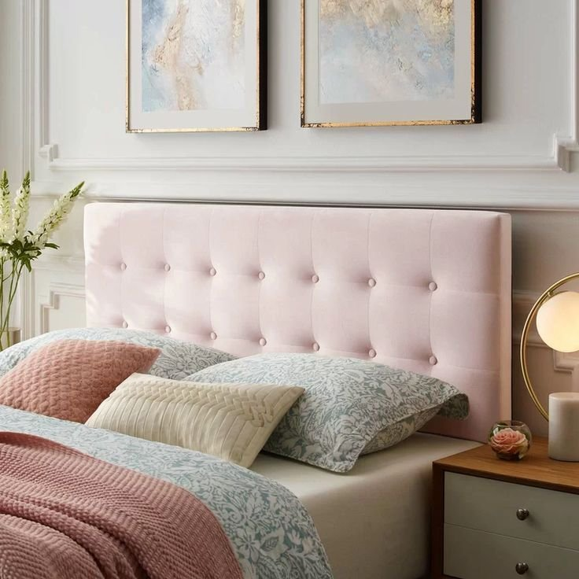
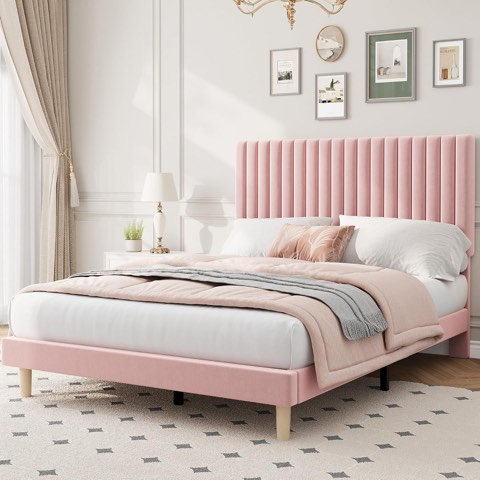
Velvet Upholstered Platform Bed Frame with Adjustable Headboard, Pink, Full
Shop on AmazonA Softly Pink Bedroom Palette
Beyond a single accent, a bedroom built around a genuinely soft pink palette reads as calm rather than themed.
Dusty pink bedding, pale pink walls, and warm wood furniture keep the look grounded instead of overly sweet.
The effect works especially well layered with white and cream, which keeps the pink from ever feeling like it's trying too hard.
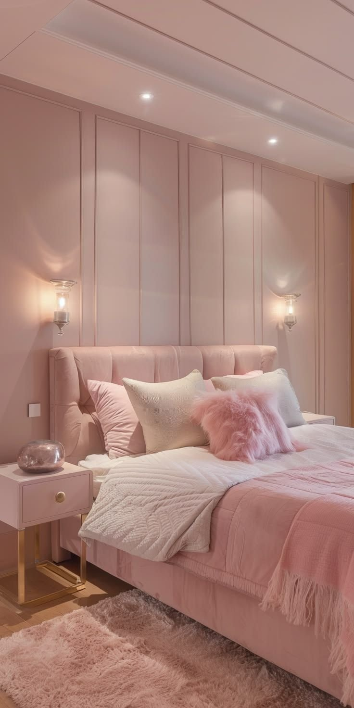
Pink Curtains for Softness
Curtains are one of the lowest-commitment ways to bring pink into a room, since they're easy to swap out later if the mood ever changes.
A soft blush or dusty rose panel filters light with a warm tint, which changes the whole feel of a room throughout the day.
They pair naturally with neutral walls and furniture, letting the windows carry the color instead of the whole room.
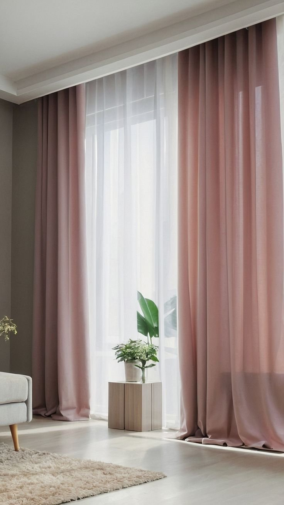
Pattern Through Pink Wallpaper
Wallpaper brings in pink along with pattern at the same time, which is a different effect than flat paint entirely.
A subtle floral or textured pink print adds depth and movement to a wall without needing any additional decor to carry the look.
It's an easy way to commit to one wall's worth of personality while the rest of the room stays calm and neutral.
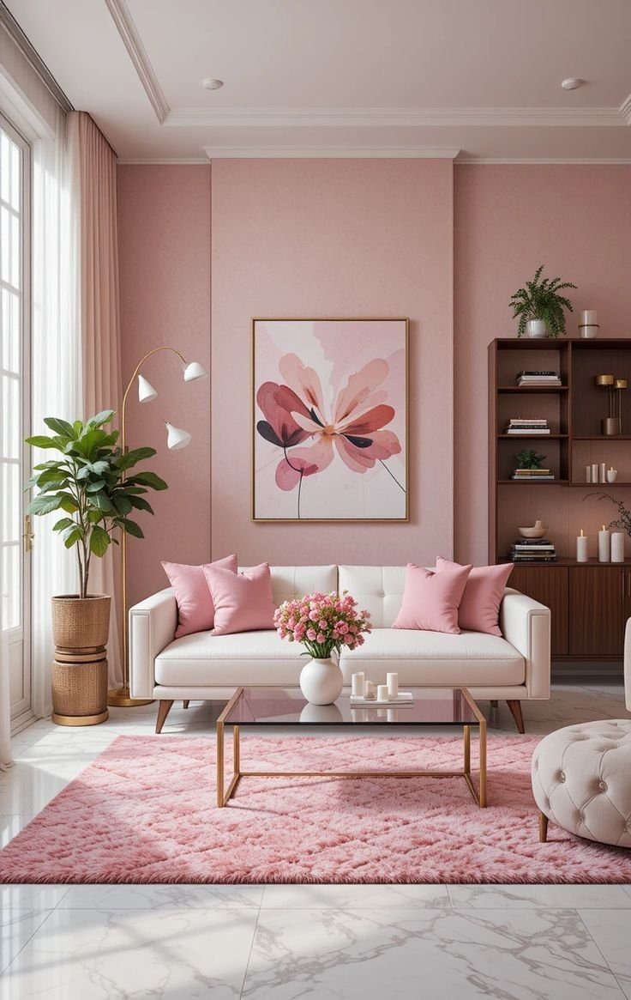
One Wall Painted Pink
A single pink accent wall commits to the color without asking the whole room to go along with it.
It works in almost any room, living room, bedroom, even a hallway, and gives a space a focal point that paint alone rarely manages on its own.
Keeping the remaining walls neutral lets the pink wall stay the statement instead of getting lost among competing colors.
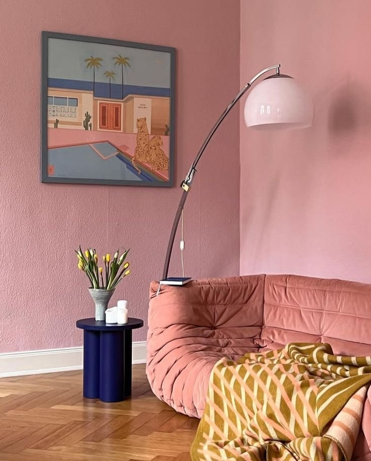

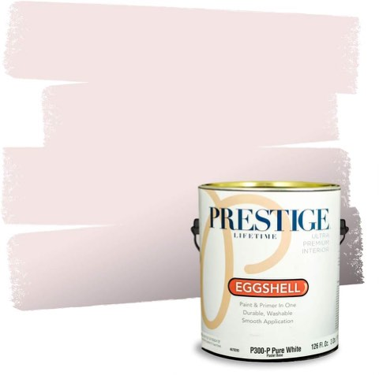
PRESTIGE Interior Paint and Primer in One, Pink Sugar, Eggshell, 1 Gallon
Shop on AmazonA Pink Sofa as the Living Room Anchor
A pink sofa is one of the boldest ways to bring the color in, and it works because it anchors the whole room instead of just accenting it.
A dusty rose or blush velvet reads as sophisticated rather than sweet, especially against a neutral wall and floor.
Everything else in the room can stay quiet once the sofa does this much work, a few neutral accents are really all it needs around it.
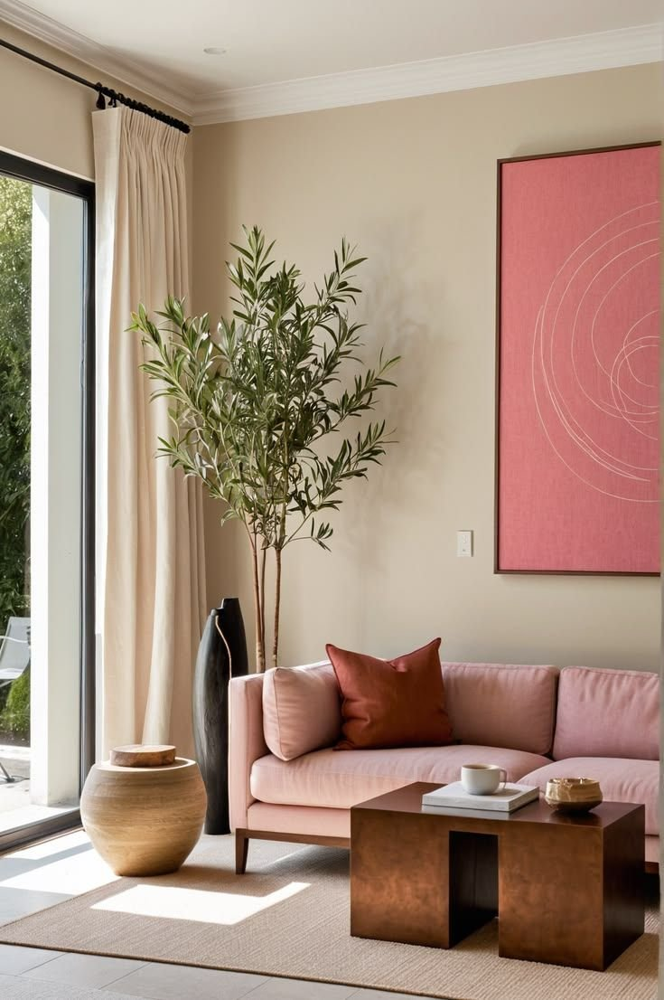
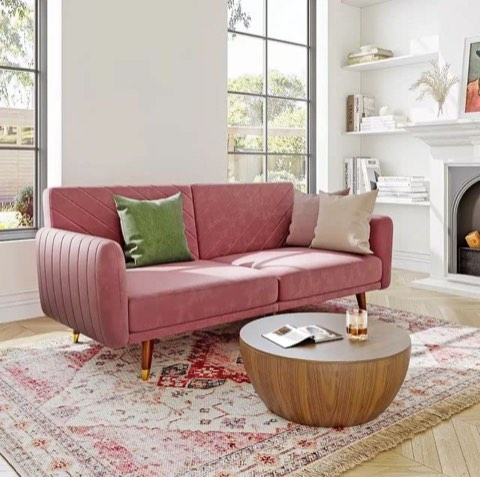
Pink Blush Velvet Futon Couch Sofa Bed with 2 Pillows, Convertible Sleeper
Shop on Amazon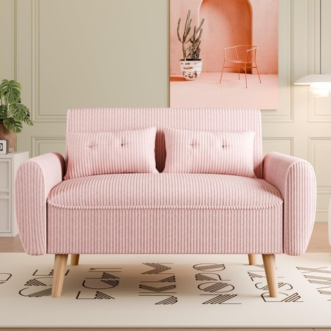
Vongrasig 47 Inch Small Modern Loveseat Sofa, Soft Corduroy, Mid Century
Shop on AmazonChoosing a Shade That Actually Works
Dusty, muted pinks, think blush, dusty rose, or terracotta-leaning pink, tend to age far better than anything closer to bubblegum or neon. They read as a genuine color choice rather than a theme, and they pair easily with warm neutrals, sage green, brass, and natural wood.
How much pink to use comes down to commitment level. A full wall or a sofa is a real commitment; a rug, curtains, or a few accessories let the color in gradually, with room to add more once it's clear the shade actually works in the space.
Final Thoughts
Pink doesn't have to mean girly, and it doesn't require painting an entire room to make a real impact. The right dusty shade, paired with the right neutral or grounding tone, reads as considered and genuinely charming rather than themed.
Starting small, a rug, a few accessories, one curtain panel, is the easiest way to find out whether pink actually belongs in a space before committing to anything bigger.